Founder discovery · Dinner intelligence
Find the right people.
Build the right room.
Founder Index combines schema-wide search, citable web evidence, and deterministic seating optimization in one reviewable workflow. Every screenshot below comes from the running application using synthetic Demo data.
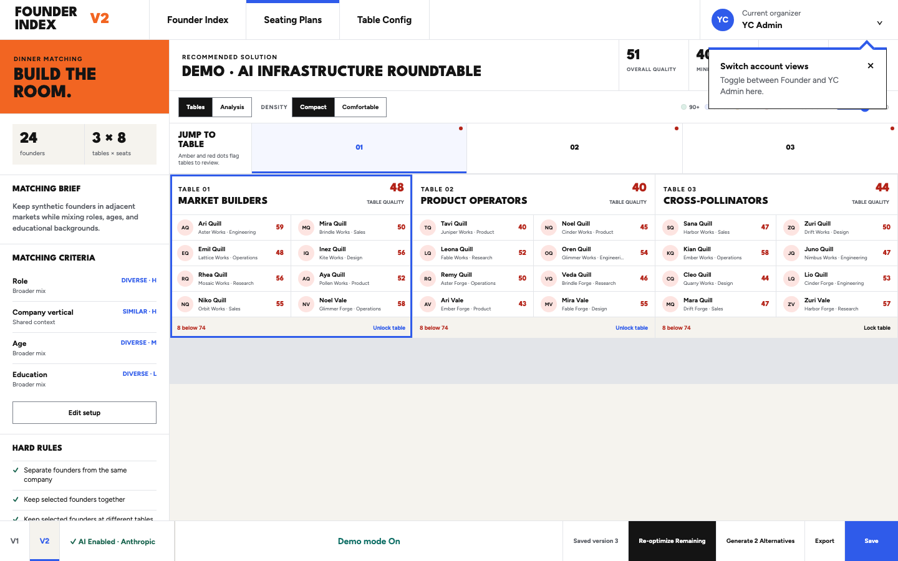
01 · Founder discovery
Search starts broad, then becomes exact.
Zero-query collections make the index useful before anyone types. Natural-language input compiles into visible, editable dimensions, with grid and list views, grouping, sorting, export, and explicit no-results recovery.
- DiscoveryExplainable recommendations with visible reasons
- ControlEvery interpreted dimension remains editable
- RecoveryFailed searches preserve intent instead of resetting
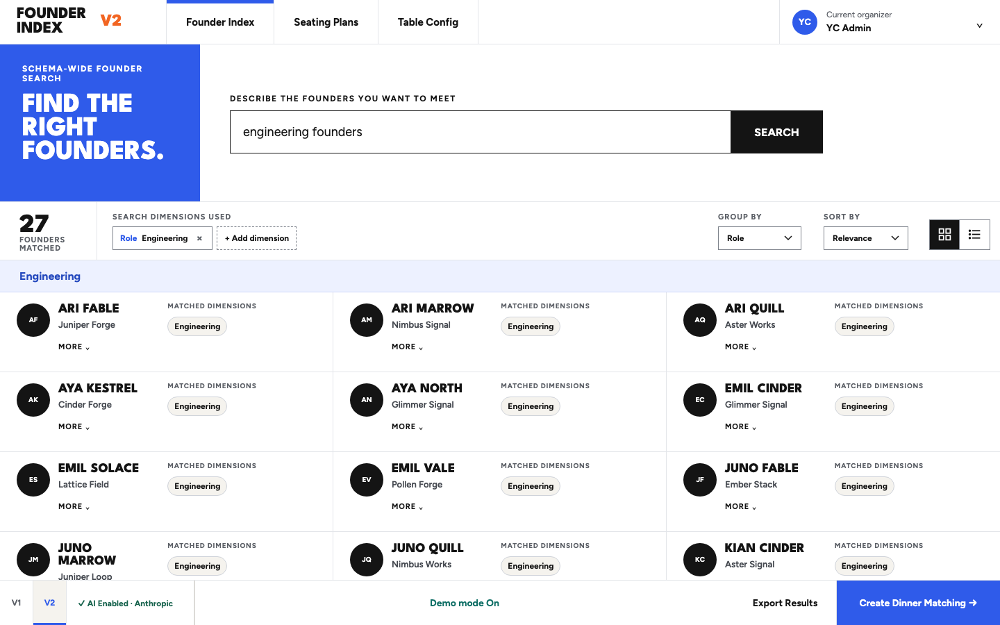
02 · Dinner matching
A seating plan you can inspect, challenge, and improve.
Organizers define the cohort, capacity, objectives, and hard rules. The optimizer produces complete assignments only, shows weak placements, compares structural alternatives, and keeps every manual decision visible.
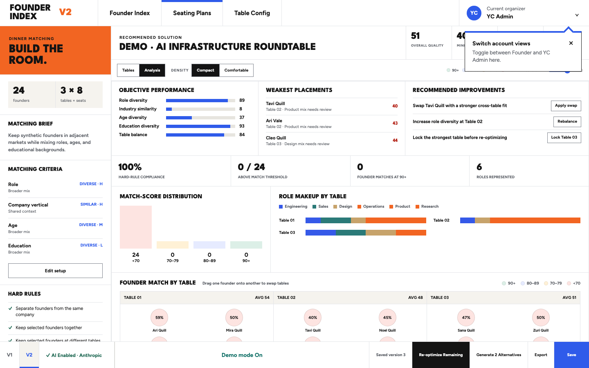
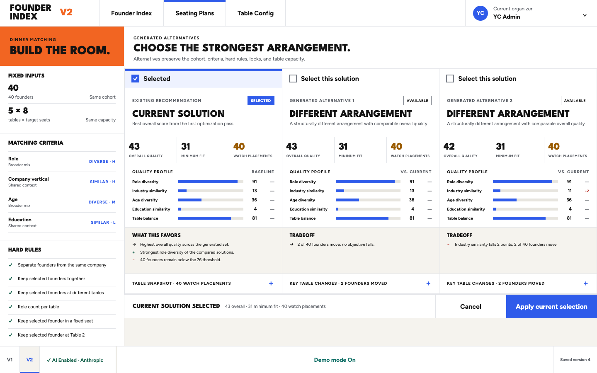
03 · Evidence and privacy
AI can assist without becoming the source of truth.
Authoritative founder fields stay separate from web evidence. Supported claims retain source URL, retrieval date, provider, confidence, and entity match. Provider credentials travel directly to the server, are validated, and are encrypted before local persistence.
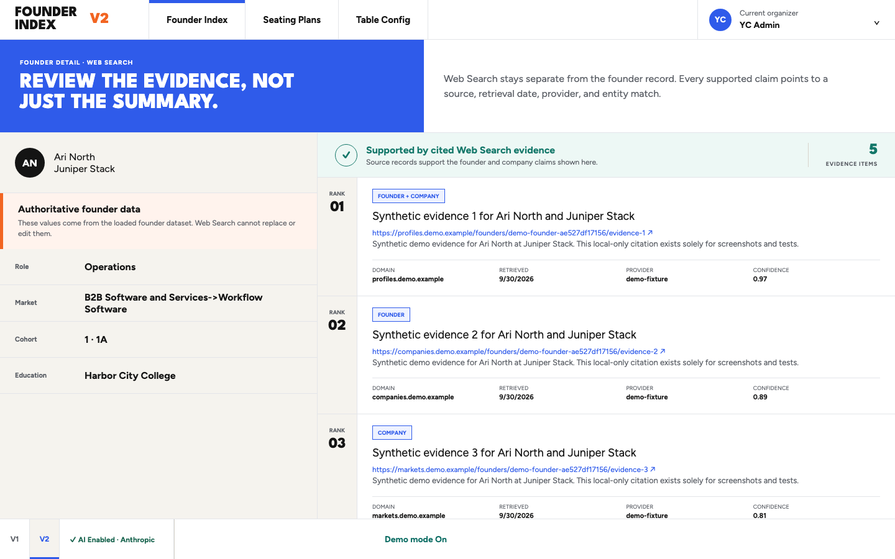
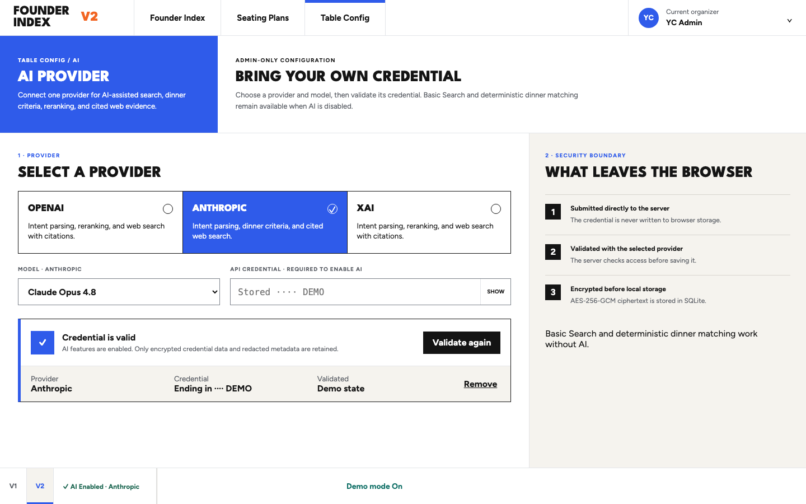
Architecture
One deployable service. Clear boundaries.
- BrowserReact V2 surfaces, Basic Search, local Demo toggle, and no credential persistence.
- ServerTyped founder, enrichment, provider, dinner, versioning, and export routes.
- SQLiteDurable founders, append-only dinner versions, evidence history, and encrypted provider secrets.
- ProvidersOptional adapters for interpretation and cited web search; deterministic matching works without them.
Release storyboard
Sixteen verified states.
The sequence covers discovery, search, failure recovery, plan creation, analysis, persistence, export, evidence, AI configuration, and responsive behavior.
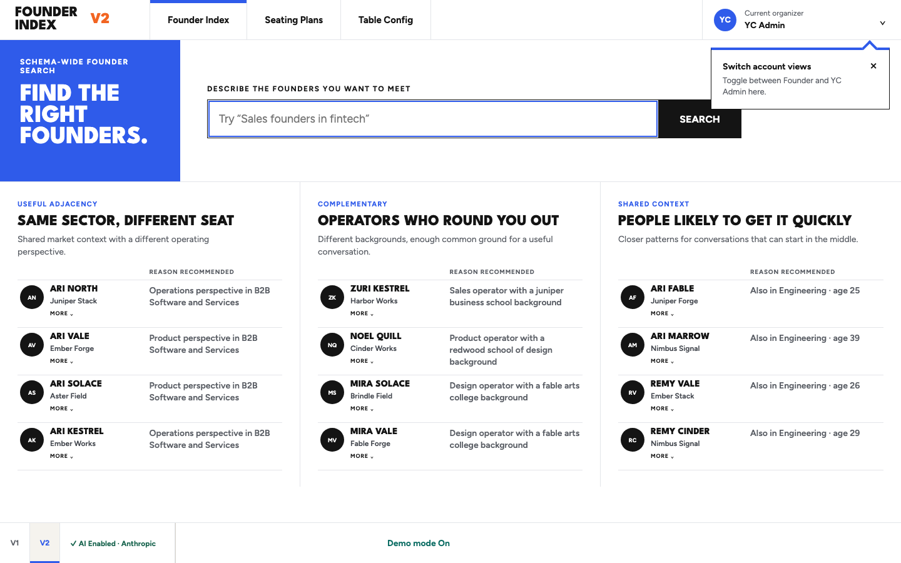
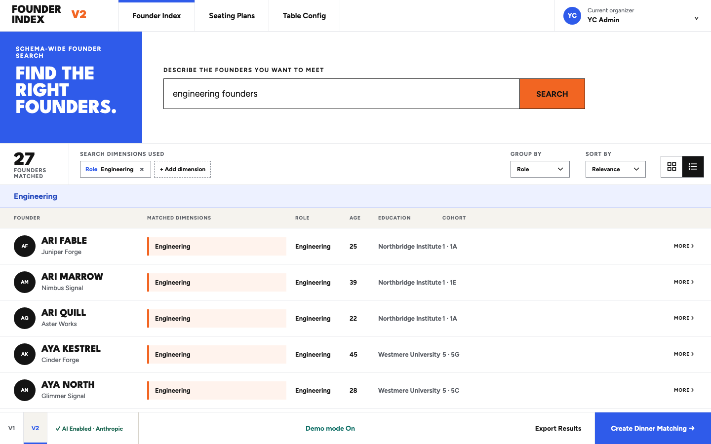
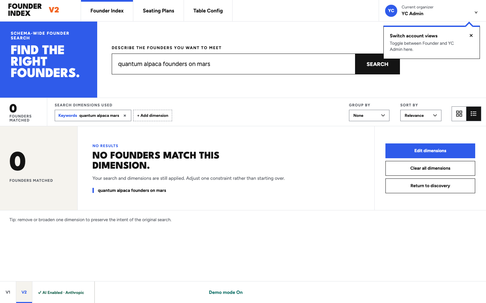
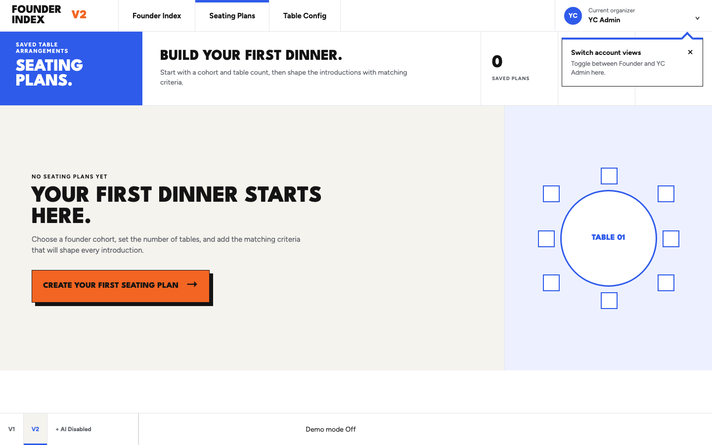
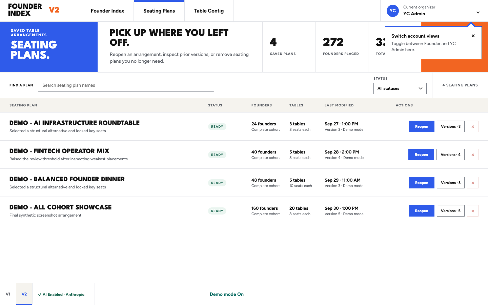
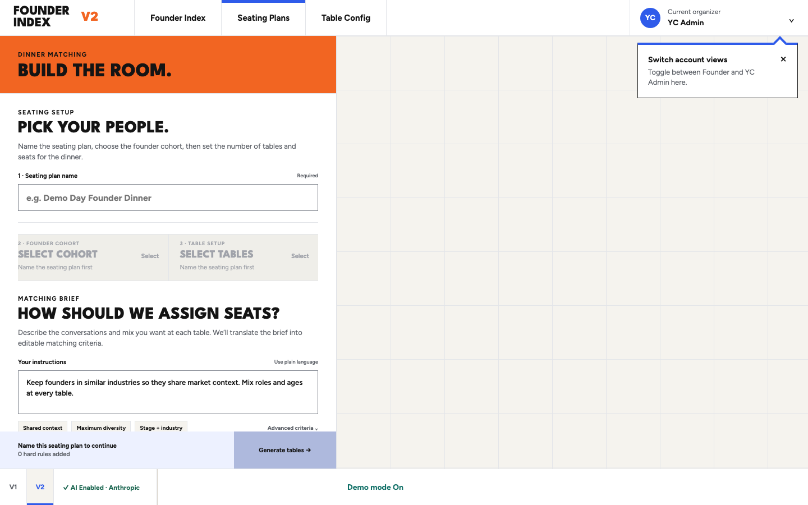
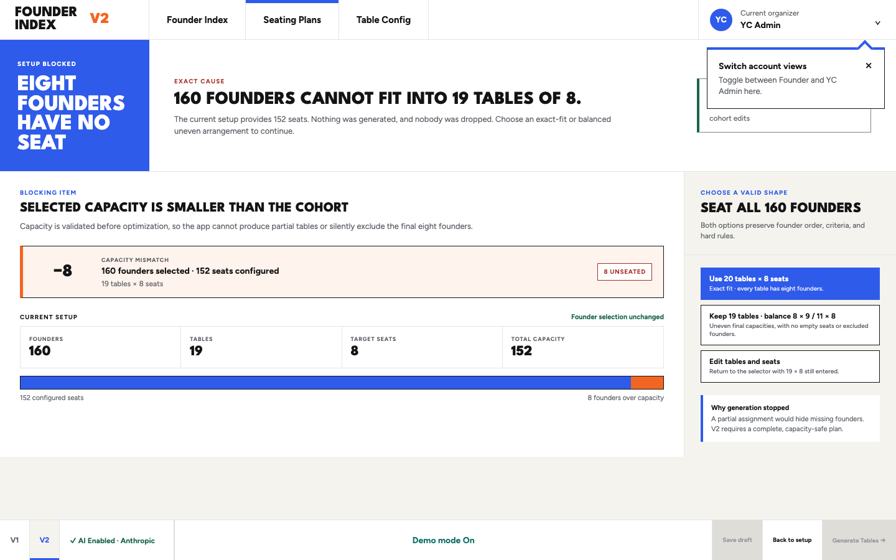
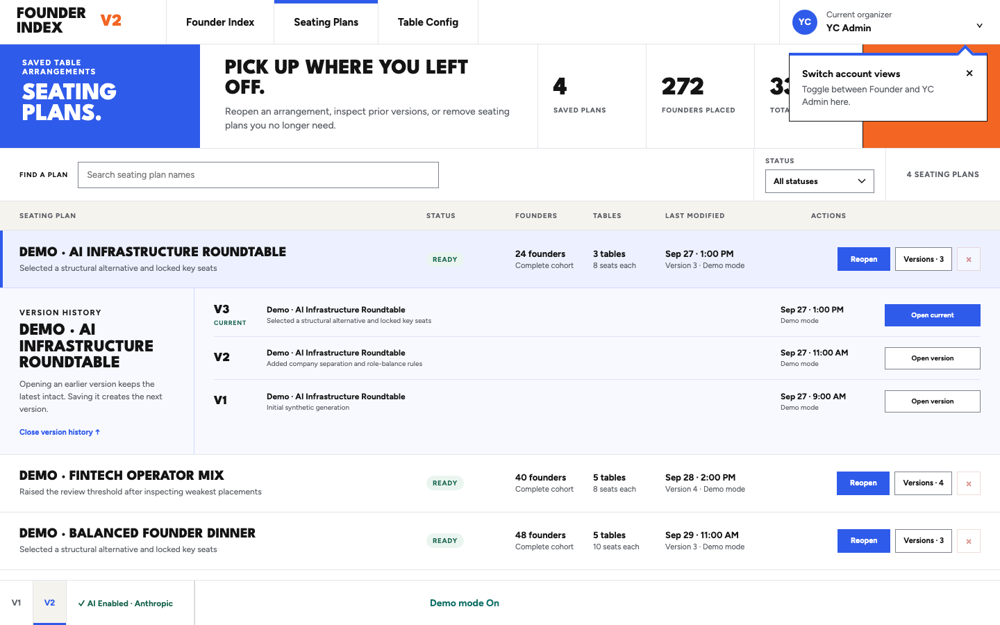
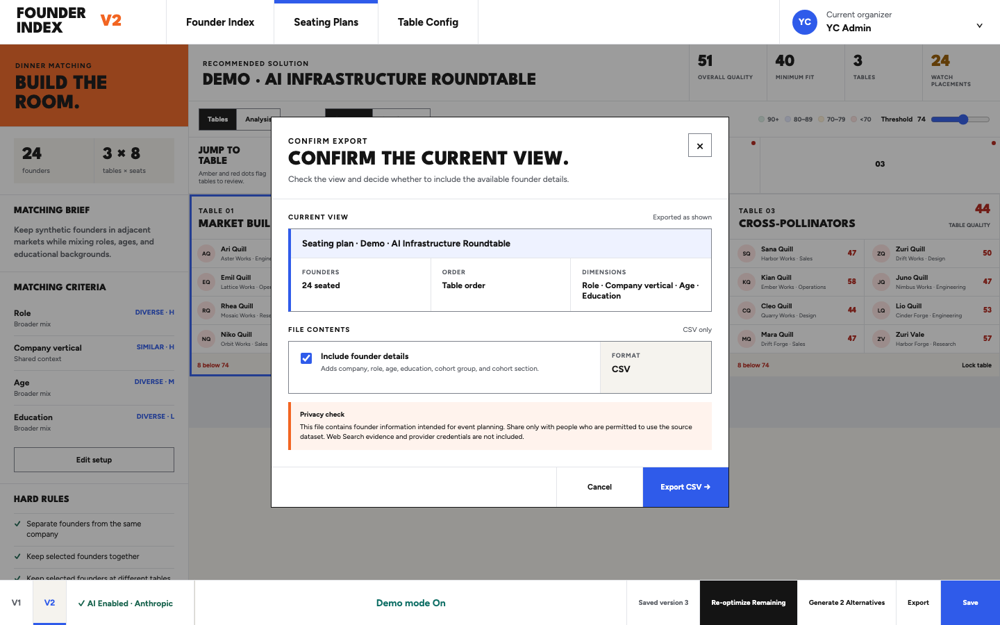
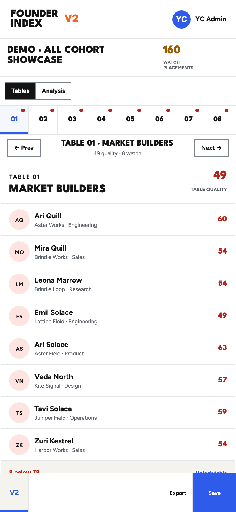